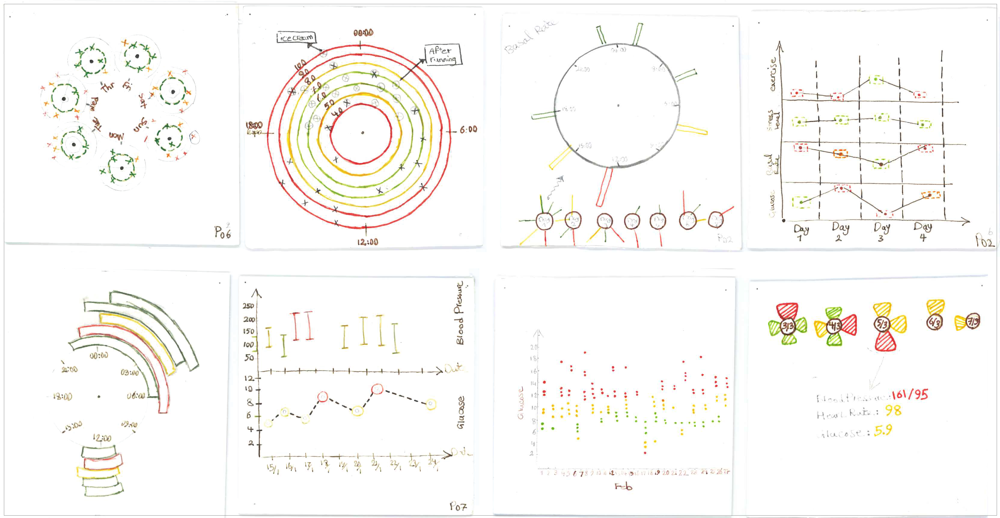

Patient-Generated Data Visualization Designs
Publications
Description
Patients with chronic conditions are usually advised or are self-motivated to track their health data at home and present this data to the healthcare providers during clinical visits. However, often these patient-generated data collections are large, complex and individual. It makes it challenging and time-consuming for providers to understand this data during a short clinical visit. We interviewed four diabetes patients and obtained a sample of their data collections to understand their personal lifestyle and perspectives on the process of tracking, recording, and presenting their data. Based on the information we gathered from patients in our study, we designed various personal visualizations tailored to the patients.